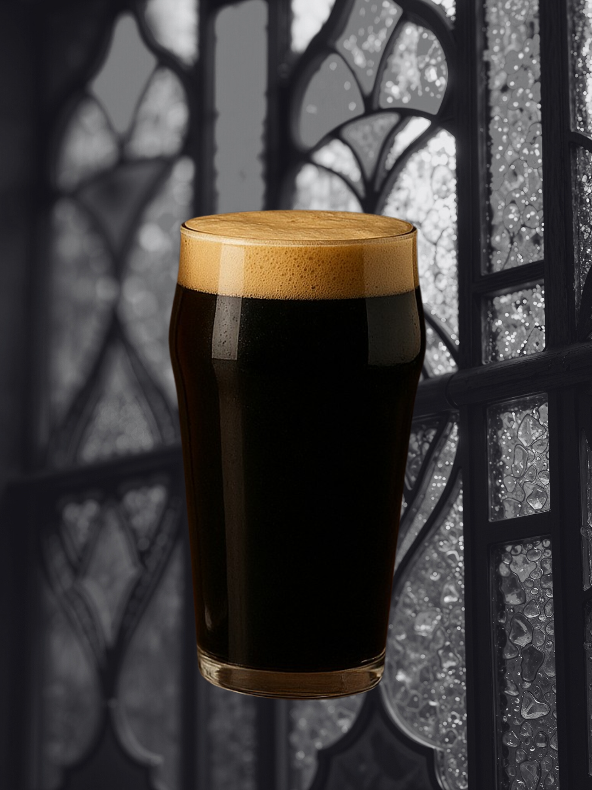

ESTILOS
Dubbel
Este estilo honra la tradición de las cervezas de Abadía. Es una cerveza de color cobre profundo y gran cuerpo, donde la estrella es la malta rica y el azúcar candi, que aportan un perfil intenso a caramelo, higos, pasas y pan tostado. La levadura belga añade sutiles notas especiadas, pero el foco es la calidez y la dulzura de la malta. Es una bebida para ser contemplada y disfrutada con serenidad.

Tripel
La cúspide de la tradición belga, una cerveza poderosa que engaña con su color dorado pálido. Es notablemente compleja a pesar de su apariencia clara: su alta graduación alcohólica está perfectamente camuflada por un abanico de sabores frutales (pera, manzana, cítricos) y especiados (pimienta blanca, clavo) provenientes exclusivamente de la levadura de Abadía. El proceso de elaboración es paciente y requiere una gran destreza para lograr su cuerpo pleno y su final seco. Es una cerveza de contemplación.

Session IPA
Representa la maestría de concentrar un sabor impactante en una cerveza ligera. Es una versión de la India Pale Ale con un aroma vibrante y explosivo a cítricos y frutas tropicales, pero manteniendo una baja graduación alcohólica. Perfecta para un consumo prolongado y sin sacrificar la complejidad. Es nuestra bebida más accesible, manteniendo la calidad en cada gota.

Stout
Si bien no es un estilo monástico tradicional, nuestra Stout comparte la disciplina en el proceso. Es una cerveza oscura, casi opaca, y robusta. El uso de maltas fuertemente tostadas domina el paladar con sabores francos a café espresso y cacao amargo, con un final seco y refrescante que invita al siguiente sorbo. Un perfil honesto y sin adornos.
